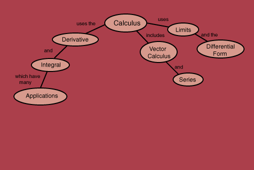

Maximum and minimum determination
The
derivative and integral
from calculus are primary working tools in the physical sciences.
Integrals of functions
Table: derivatives of functions
Even and odd functions
Index
HyperPhysics
*****
HyperMath
R Nave
Go Back